02 Iteration: Datenbank
von Thomas Esterer, MMT-M 2012
Testsetup
- WEBrick 1.3.1 Server
- ruby 1.8.7
- MySQL 5.3.31 - ÄNDERUNG SEIT DER LETZTEN ITERATION
- Development Enviroment
Iteration der Datenbank
Als erste Reaktion auf die durchgeführte Analyse der Applikation, stieg ich von SQLite auf MySQL um. Dieser Schritt erfolgte aufgrund der großen Datenmengen, die für die Erzeugung der Views benötigt werden. Ebenso wird SQLite nicht als Produktiv-Datenbank empfohlen.
Folgende Ergebnisse erreichte ich dadurch:
- Die Front Page kann im ausgeloggten Zustand alle Requests bedienen. Es gibt keine Fehler mehr.
- Die durchschnittliche Antwortzeit beträgt 13,8 Sekunden. Noch zu wenig für mein Ziel von 12,5 Sekunden.
- Die gesamte Applikation profitierte vom Umstieg auf MySQL. Einerseits durch bessere Antwortzeiten, andererseits auch durch die Verringerung von Errors.
Zielsetzung
- Ausgangssituation: Die Front Page (/) bietet im ausgeloggten Zustand eine hohe Fehlerrate und kann nur hin und wieder mit einer durchschnittlichen Zeit von 25 Sekunden antworten.
- Ziel: Die Front Page (/) sollte im ausgeloggten Zustand alle Requests bedienen können, und eine durchschnittliche Antwortzeit von weniger als 50% der aktuellen 25 Sekunden (12,5 Sekunden) bieten.
- nach Iteration 1: Ziel wurde durch Umstieg der Datenbank zur Hälfte erreicht. Die Fehlerquote sank auf 0%. Die durchschnittliche Antwortzeit beträgt jedoch immer noch über 12,5 Sekunden.
Durchgeführte Tests
- Front Page /
- User Page Many Recipes /users/43
- User Page Less Recipes /users/51
- Recipe Page Many Ingredients /recipes/2013
- Recipe Page Less Ingredients /recipes/2016
(Jeweils eingeloggt – neuer eigener User – und ausgeloggt)
Resultate grafisch
Die Grafiken wurden mithilfe des autobench_grapher (inkl. eigener Adaptierungen) erstellt (https://raw.github.com/brandonparsons/performance_tests/master/graphing/autobench_grapher.rb).
Logged Out - Front Page
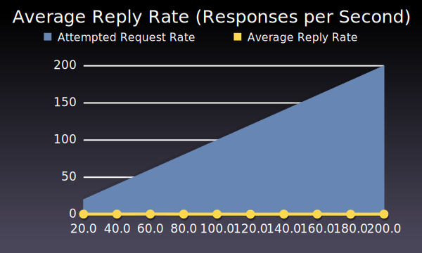
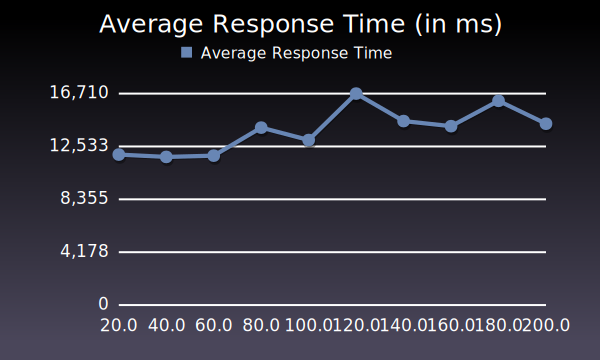
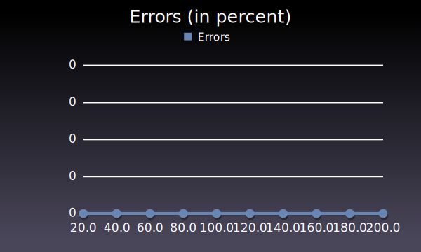
Logged Out - User Page Many Recipes
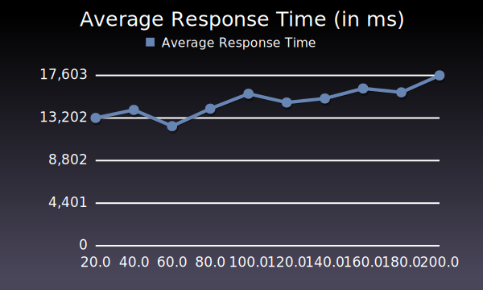

Logged Out - User Page Less Recipes
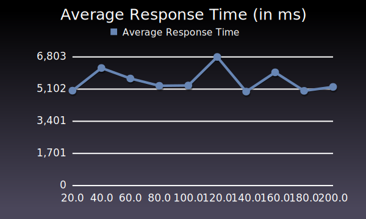

Logged Out - Recipe Page Many Ingredients
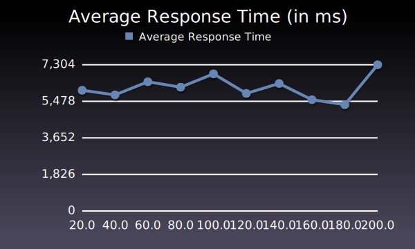

Logged Out - Recipe Page Less Ingredients
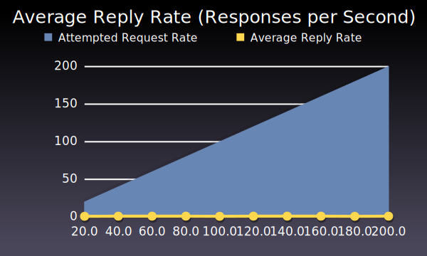
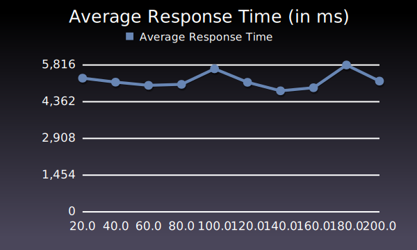

Logged In - Front Page
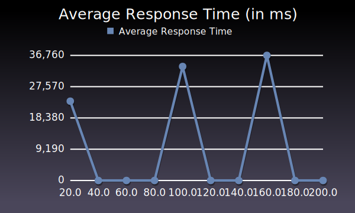
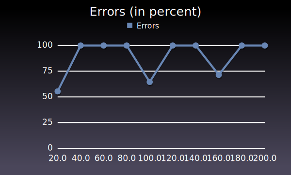
Logged In - User Page Many Recipes


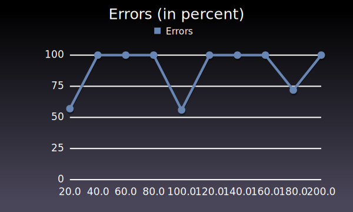
Logged In - User Page Less Recipes
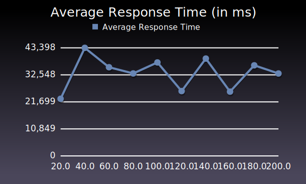
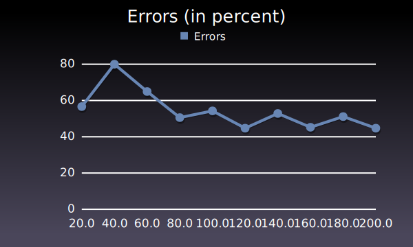
Logged In - Recipe Page Many Ingredients
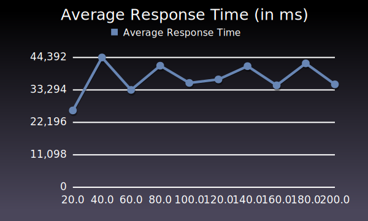
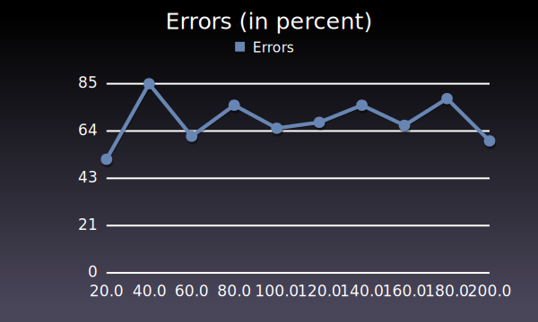
Logged In - Recipe Page Less Ingredients
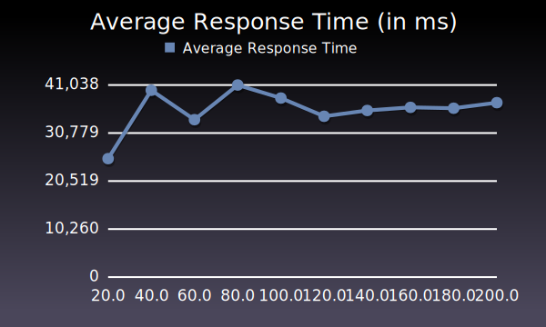
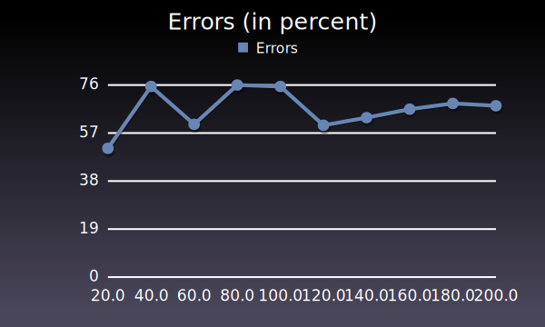